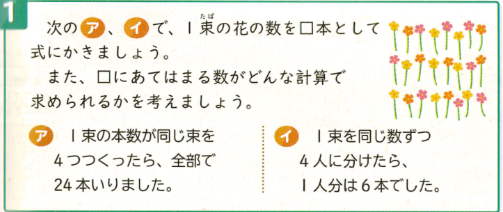

| 時数 | ページ | 目標 | 学習内容 | 主な評価基準 |
|---|---|---|---|---|
| 第1〜第5時 | P.118〜P.123 | ・( )を使った式や四則が混ざった式の計算順序を理解し、計算ができる。 ・計算のきまりを使って工夫して計算することができる。 |
・( )のある式の計算順序 ・四則混合の計算順序 ・計算の工夫（分配法則や結合法則など） |
【知技】四則混合や( )のある式の計算順序を理解し、正しく計算できる。 【思判表】計算のきまりを活用して工夫した計算の仕方を説明している。 |
| 第6時 | P.124 | ・わからない数量を□として、たし算やひき算、かけ算、わり算の式に表すことができる。 | ・未知の数量を□とおいた式への表し方 | 【知技】場面の中のわからない数を□として立式することができる。 【態度】未知の数量を□で表すことの簡潔さに気づき進んで立式しようとしている。 |
| 第7時（本時） | P.125 | ・□にあてはまる数を求めるために、逆算（もどして考えること）の計算方法を考え、説明することができる。 | ・□にあてはまる数を求める計算（逆算の考え方） | 【思判表】□の求め方を、テープ図や場面の操作（逆の計算）と関連づけて考え、説明している。 |
| 第8時 | P.126 | ・単元の学習内容の定着を確認し、理解を確実にする。 | ・学習のまとめ、確かめ問題、ふりかえり | 【知技】単元全体の計算や□を使った立式・逆算が確実にできている。 |
| フェーズ | フロー（目安時間） | クエッション（30字以内） | アンサー | フィードバック |
|---|---|---|---|---|
| 導入（P1） | F1:既習のふりかえり（2分） | 前回の□を使った式を覚えていますか？ |
(A+) わからない数を□にして式を作った (A+) 1束□本で4束だから□×4＝24とした (A+) たし算や引き算でも□を使えた (A-) □の数字はテキトウに当てる |
(F+) よく覚えていましたね！式に表せましたね。 (F-) テキトウではなく、決まった数を探す方法を考えよう。 |
| F2:主問題（2分） | アとイの式を作り□の求め方を考えよう |
(A+) アの式は □×4＝24 です (A+) イの式は □÷4＝6 です (A+) □の数は6本だと思います (A-) アの式は 24÷4＝□ です |
(F+) 1束を□として正しく立式できました！ (F-) 問題の通り1束を□として式を作ってみよう。 |
|
| F3:予想・見通し（3分） | □を計算で求めるにはどうすればいい？ |
(A+) 反対の計算を使えばよさそう (A+) アは24÷4で計算できそう (A+) 図を描いて巻き戻すとわかりそう (A-) かけ算だから□×4を計算する |
(F+) 「反対の計算」「もどす」という良い視点ですね！ (F-) □×4＝24の□を出す計算を考えようね。 |
|
| 展開（P2） | F4:めあての提示（2分） | 今日のめあてをみんなで確認しましょう |
(A+) ▢にあてはまる数を計算で求める (A+) どんな計算を使えばいいか調べる (A+) もどして考える方法を見つける (A-) □の数を勘で当てる |
(F+) その通り、確実な求め方を探していきましょう。 (F-) 勘ではなく計算で決める方法を見つけよう。 |
| F5:自分で考え取り組む（5分） | アとイの□はどんな計算で出せるかな？ |
(A+) アは24÷4＝6で出せます (A+) イは6×4＝24で出せます (A+) 九九や反対の計算で確かめた (A-) イは6÷4＝1.5にする |
(F+) どちらも反対の計算を使って導けましたね！ (F-) 元の数（□）は6より大きいか小さいか考えてみよう。 |
|
| F6:全体交流（5分） | アとイの計算にはどんな共通点がある？ |
(A+) かけ算の式はわり算で求めた (A+) わり算の式はかけ算で求めた (A+) どちらも元の状態にもどしている (A-) どちらも同じ計算をしている |
(F+) 式の計算と「逆の計算」をしていることに気づけました！ (F-) かけ算とわり算でどう変わっているか比べよう。 |
|
| F7:教師の説明（3分） | 元の数にもどす考え方を何というか知ってる？ |
(A+) もどして考えること (A+) 逆から計算すること (A+) 反対の計算で求めること (A-) ひっ算すること |
(F+) そうですね！「もどして考える」ことが大切です。 (F-) どんな順序で計算を戻すかに注目しよう。 |
|
| F8:主問題の解決（1分） | アとイの１束の数は何本でしたか？ |
(A+) アは6本でした (A+) イは24本でした (A+) 式にあてはめても合っています (A-) アもイも6本でした |
(F+) 完璧です！正しく解決できましたね。 (F-) イの元の大きさをもう一度確かめよう。 |
|
| F9:学習内容のまとめ（3分） | □にあてはまる数はどう求めればいい？ |
(A+) もどして考えると求められる (A+) 式の反対の計算を使う (A+) 逆から順に計算していく (A-) 式をそのまま計算すればよい |
(F+) 大切な「もどして考える」というまとめができました！ (F-) □を一人ぼっちにするためにどうもどすか考えよう。 |
|
| F10:適用問題（10分） | ①〜④の□を「もどして」求めよう |
(A+) ①50-24＝26 ②73+15＝88 (A+) ③42÷6＝7 (A+) ④7×9＝63 (A-) ①50+24＝74にする |
(F+) 全問「もどして考える」を使って正解できました！ (F-) たし算の反対はなにか、もう一度考えよう。 |
|
| 終末（P3） | F11:教師の説話（3分） | 探偵が足跡から事件を解くのと似てない？ |
(A+) 結果から時間を巻き戻して考えている！ (A+) 逆算は推理みたいでおもしろい (A+) 算数でも探偵になれるんだ (A-) 算数と探偵は関係ない |
(F+) まさに算数の探偵ですね！面白い着眼点です。 (F-) 「巻き戻して考える」ところがそっくりだよ。 |
| F12:本時のふりかえり（7分） | 今日つかんだ「もどして考える」コツは？ |
(A+) ＋は−、×は÷で反対にすればいい (A+) 図を描くと反対の計算がすぐわかる (A+) □の計算も自信を持って解けた (A-) まだ計算の順番がよくわからない |
(F+) 反対の計算に気づけた素晴らしい振り返りです！ (F-) 図を使って一緒に「もどす」練習をしようね。 |
